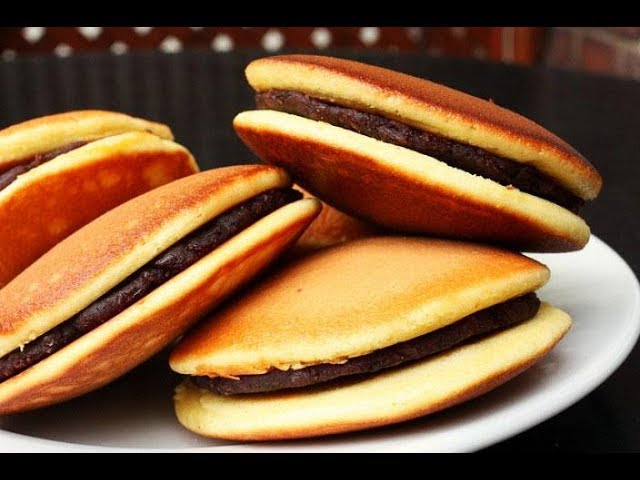

Dora Cake

Image of the famous sweetdish of Japan that is Doracake
Remember when we were child we all saw the doracake on doremon cartoon and we all want to it this. To make the
doracake very less ingredients. It can be prepared in very less time.
Here's what you need:
- 2 Eggs
- 70 gm granulated or icing sugar
- 1 Tbso Honey
- 80 gm All purpose flour/maida
- 1/2 tsp baking soda
- 1 tbsp wates
- 1/2 tsp vegetable essence or pure vanilla extract(optional)
- 210 gm choolate spread or any fruit spread of your choice
- We take a large boowl
- In a large boowl combine and whisk the eggs,sugar, honey till the mixture becomes fluffy.
- Now mix the flour and baking powder properly in a separate powder properly in a seprate bowl and sift the
dry into the wet. Mix them well and refrigerate for about 15 minutes.
- Remove the batter from the fridge and add in water. The batter should be slightly smooth in consistency. Add
and mix the vanilla extract or essence.
- The amount of water should be between 1/2-1 tbsp in this measurement.You can adjust the amount of water as
per the amount of flour and the size of the eggs.
- Now take a non-stick pan or a skillet/tawa (avoid making the dorayakis in a deep-bottomed pan for a perfect
round shape) and heat over medium to low heat.
- Take a paper towel/tissue,dip it in oil coat the surface of the pan. Then remove the oil completely from the
surface with another dry towel/tissue.
- Now take a ladle or a small measuring cup and pour about 1/4th cup of the batter from above 3"" height from
the pan for an equal diameter pancake.
- Once the surface of the pancake parts bubbling flip and cook the other side.
- Transfer the pancake to a plate and cover with a wet and clean or a piece of cloth to prevent the pancake
from drying
- Prepare the other pancake in the same way. Coating the fry pan surface with oil is not require further
after the first pancake.
- Now apply the spread on the dorayaki on the other side of each dorayaki with more of the spread in the
center for a curved look and top with another pancake with the bottom facing inwards.
- The dorayaki are ready to be served. If you want to store them then wrap and store them in ziploc pouches.
You can store them for a month by keeping them in the freezer.